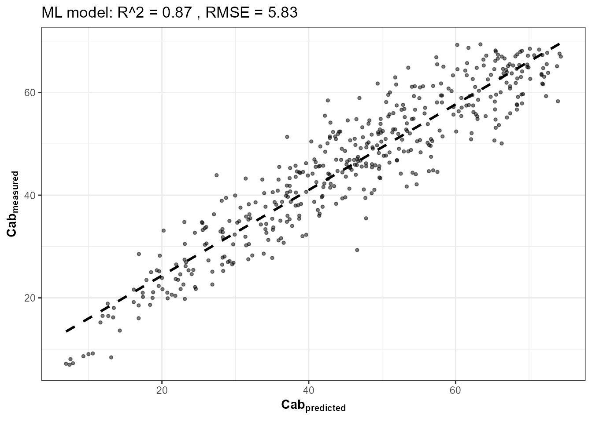
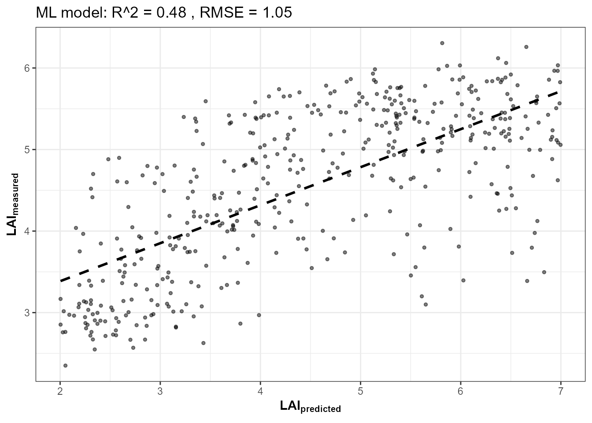
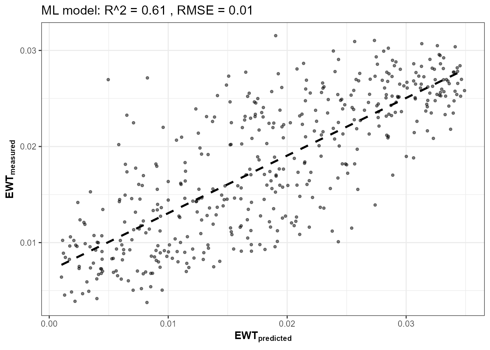
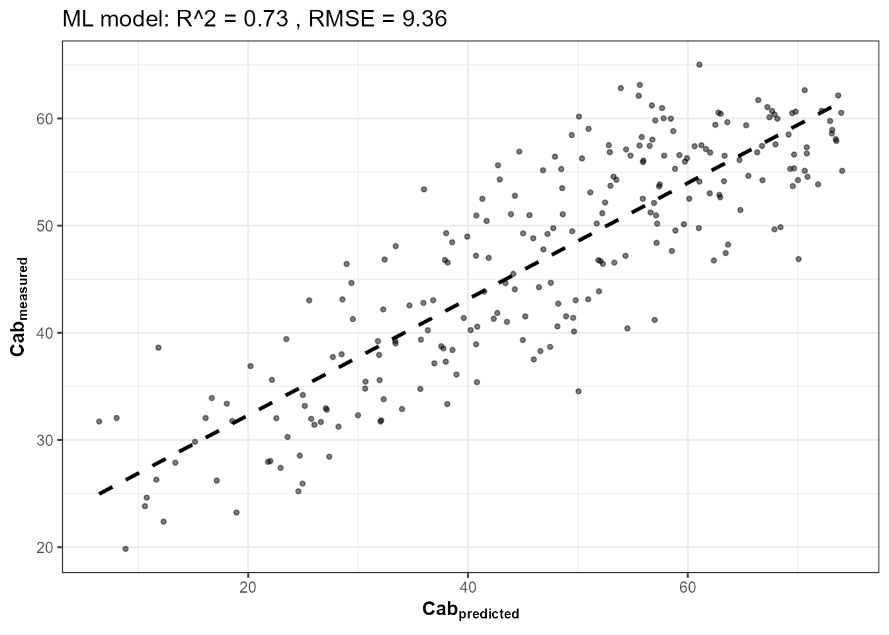
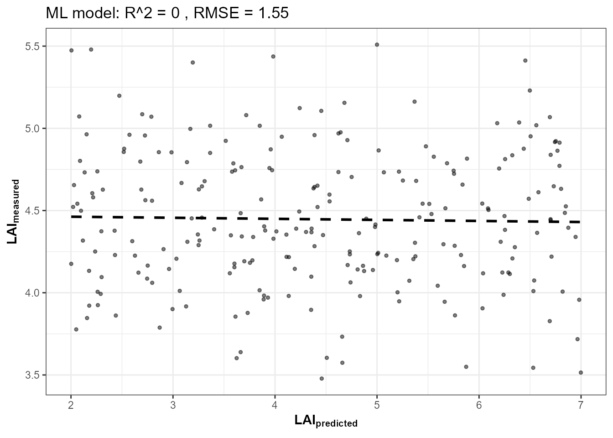
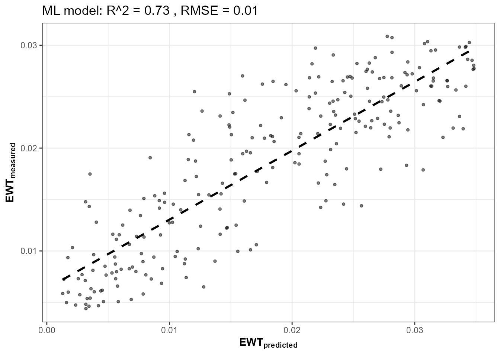
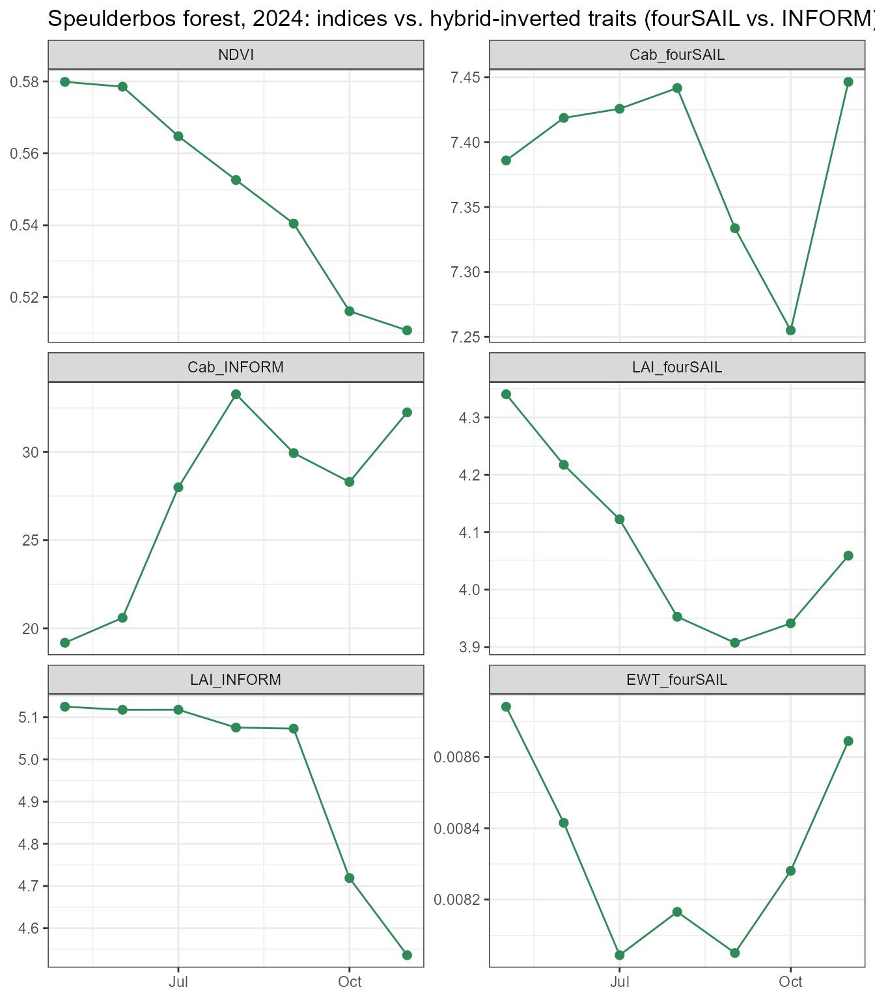
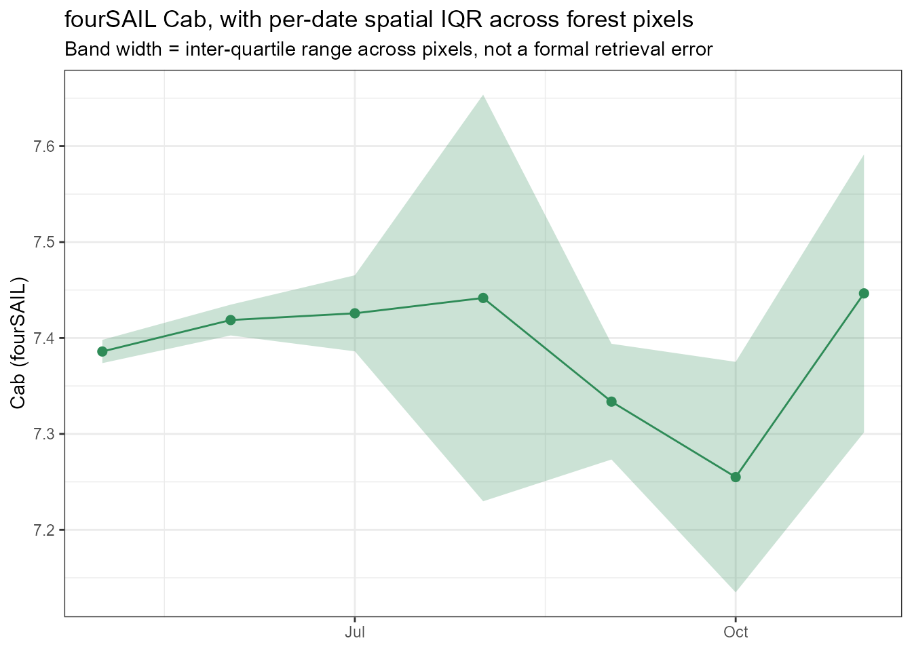
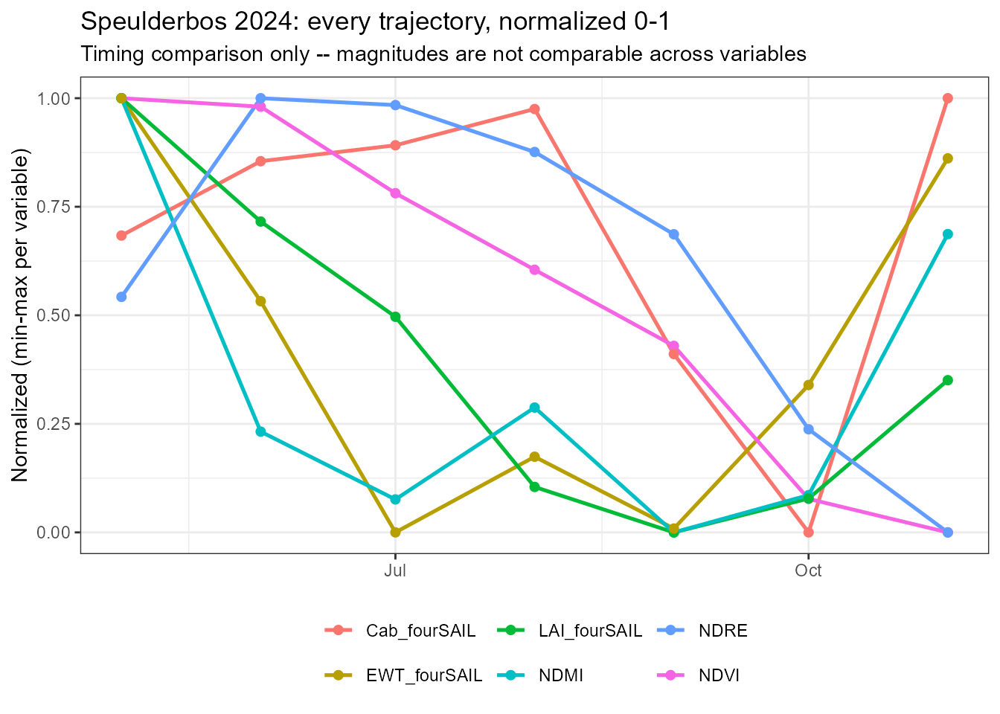

17. Monitoring a Forest Site Through Time
t17-forest-time-series.RmdTutorial 15 retrieved ONE real Sentinel-2 scene and produced a spatial trait map. This closing page retrieves a real, monthly time series across a growing season, over a real forest site, and compares plain spectral indices (NDVI, NDRE, NDMI) against physically-retrieved traits (Cab, LAI, EWT) from the hybrid-inversion framework – using two structurally different canopy models (fourSAIL, INFORM) trained on the same real pixels, specifically to check whether the retrieved trajectory is trustworthy or an artifact of model choice.
Sentinel-2 -> cloud/SCL mask (inside get.sentinel2_cube) -> forest mask (NDVI)
|
v
Robust per-date stats (median + IQR) over masked forest pixels
|
v
+----+----+----+
| | | |
v v v v
NDVI/NDRE/NDMI Cab/LAI/EWT, fourSAIL-trained AND INFORM-trained
| | | |
+----+----+----+
|
v
Domain check + compare trajectories -- including where the two models disagree1. Site: Speulderbos, NL
Speulderbos is a long-term Douglas-fir/beech forest research site in the Netherlands (Gelderland) – a real, physically-meaningful location for a seasonal forest time series.
library(sf); library(terra)
pt <- st_point(c(5.6900, 52.2500)) |> st_sfc(crs = 4326)
scenario <- st_as_sf(data.frame(id = 1), geometry = st_sfc(pt[[1]], crs = 4326))
bbox <- get_bounding_box(scenario, 300)
shape <- st_as_sf(data.frame(id = 1), geometry = st_sfc(st_polygon(list(rbind(
c(bbox["xmin"], bbox["ymin"]), c(bbox["xmin"], bbox["ymax"]),
c(bbox["xmax"], bbox["ymax"]), c(bbox["xmax"], bbox["ymin"]),
c(bbox["xmin"], bbox["ymin"])))), crs = 4326))
real_names <- c("B02","B03","B04","B05","B06","B07","B08","B8A","B11","B12")2. Train fourSAIL AND INFORM models on a larger, forest-realistic LUT
Two real improvements over an earlier version of this page:
n_samples is 1500 (up from 200), and soil is sampled across
a realistic brightness range rather than one fixed
rsoil = 0.15 – both matching Tutorial 15’s LUT-realism
argument. LAI is constrained to 2-7 (plausible for a closed
forest canopy, not the package’s generic default range). A second model,
trained on inform() simulations instead of
foursail() (forest crown geometry –
sd/cd/h/LAIu –
varying too, per Tutorial 14’s equifinality finding), lets Section 5
check whether the seasonal trajectory below actually depends on which
canopy model produced it:
n_samples <- 1500
LUT <- as.data.frame(getLUT(inputs = ToolsRTM::inputsPROSAIL, nLUT = n_samples, setseed = 1))
LUT$LAI <- runif(n_samples, 2, 7)
wl <- 400:2500
set.seed(11)
soil_b <- runif(n_samples, 0.05, 0.30)
sim_refl <- t(sapply(seq_len(n_samples), function(i) {
foursail(inputLUT = LUT[i, ], rsoil = rep(soil_b[i], length(wl)), LeafModel = "PROSPECT-PRO")$rsot
}))
refl_X <- as.data.frame(sim_refl); colnames(refl_X) <- paste0("X", wl)
refl_X <- cbind(id = seq_len(n_samples), refl_X)
se2a_full <- suppressMessages(get.spectra.convolved(rfl = refl_X, sensor = "Sentinel2a", plot.spectra = FALSE))
names(se2a_full) <- c("id","B1","B2","B3","B4","B5","B6","B7","B8","B8A","B9","B10","B11","B12")
keep <- c("B2","B3","B4","B5","B6","B7","B8","B8A","B11","B12")
se2a <- se2a_full[, keep]; names(se2a) <- real_names
train_df <- cbind(LUT, se2a)
fits_sail <- lapply(c("Cab", "LAI", "EWT"), function(trait) {
get.inversion(data = train_df, depVar = trait, inputs = real_names,
algorithm = "RF", n.samples = nrow(train_df), seed = 42)
})


names(fits_sail) <- c("Cab", "LAI", "EWT")
n_inform <- 800
LUT_i <- as.data.frame(getLUT(inputs = ToolsRTM::inputsPROSAIL, nLUT = n_inform, setseed = 2))
# inputsPROSAIL's own LMA row is held fixed at 0 by design (getLUT() samples
# Prot/CBC instead, PROSPECT-PRO's dry-matter inputs) -- LeafModel="PROSPECT-D"
# below needs LMA directly, so sample it from a typical real-leaf range.
LUT_i$LMA <- runif(n_inform, 0.005, 0.02)
LUT_i$Cs <- 0; LUT_i$fqe <- 0.01; LUT_i$Cx <- 0
LUT_i$cell.d <- 40; LUT_i$inter.c <- 0.045; LUT_i$baseline.abs <- 0.0006
LUT_i$leaf.thick <- 1.6; LUT_i$albino.abs <- 0; LUT_i$lign.cell <- 2; LUT_i$Nitrogen <- 1
LUT_i$fraction_brown <- 0.1; LUT_i$diss <- 0.5; LUT_i$Cv <- 1; LUT_i$Zeta <- 0
LUT_i$LAI <- runif(n_inform, 2, 7)
set.seed(12)
LUT_i$LAIu <- runif(n_inform, 0, 0.8); LUT_i$sd <- runif(n_inform, 400, 900)
LUT_i$cd <- runif(n_inform, 3, 6); LUT_i$h <- runif(n_inform, 15, 30); LUT_i$skyl <- 0.1
soil_bi <- runif(n_inform, 0.05, 0.30)
sim_refl_i <- t(sapply(seq_len(n_inform), function(i) {
suppressMessages(inform(inputLUT = LUT_i[i, ], rsoil = rep(soil_bi[i], length(wl)), LeafModel = "PROSPECT-D"))
}))
refl_X_i <- as.data.frame(sim_refl_i); colnames(refl_X_i) <- paste0("X", wl)
refl_X_i <- cbind(id = seq_len(n_inform), refl_X_i)
se2a_full_i <- suppressMessages(get.spectra.convolved(rfl = refl_X_i, sensor = "Sentinel2a", plot.spectra = FALSE))
names(se2a_full_i) <- names(se2a_full)
se2a_i <- se2a_full_i[, keep]; names(se2a_i) <- real_names
train_df_i <- cbind(LUT_i, se2a_i)
fits_inform <- lapply(c("Cab", "LAI", "EWT"), function(trait) {
get.inversion(data = train_df_i, depVar = trait, inputs = real_names,
algorithm = "RF", n.samples = nrow(train_df_i), seed = 42)
})


3. Retrieve a real, monthly time series – forest-masked, not a raw scene mean
Monthly windows March-November (9 dates, up from the previous 5),
wrapped in tryCatch() per date since any individual window
can fail for ordinary reasons. get.sentinel2_cube() already
applies Sentinel-2’s SCL cloud/shadow/snow mask internally (Tutorial
15); this section adds a second, vegetation-specific
mask (NDVI > 0.5, denser than Tutorial 15’s 0.3
threshold since a closed forest should read distinctly greener than
farmland) so that any road, clearing, or water within the 300m buffer
doesn’t dilute the forest signal – then computes median and
IQR across the masked forest pixels for every date, not a
single scene-wide mean:
windows <- list(c("2024-03-01","2024-03-31"), c("2024-04-01","2024-04-30"),
c("2024-05-01","2024-05-31"), c("2024-06-01","2024-06-30"),
c("2024-07-01","2024-07-31"), c("2024-08-01","2024-08-31"),
c("2024-09-01","2024-09-30"), c("2024-10-01","2024-10-31"),
c("2024-11-01","2024-11-30"))
get_one_date <- function(w) {
tryCatch({
sc <- get.satellite_collection(scenario = scenario, collection = "sentinel-2-l2a",
cloud_server = "microsoft", n.limit = 20,
date_range = w, cloud_threshold = 40, buffer_size = 300)
if (is.null(sc[[1]])) stop("no cloud-free items this window")
cube <- get.sentinel2_cube(sc[[1]], shape = shape, date_range = w,
aggregation_method = "mean", get.dataset = FALSE)
refl <- cube[[real_names]] / 10000
ndvi <- (refl[["B08"]] - refl[["B04"]]) / (refl[["B08"]] + refl[["B04"]])
forest_mask <- ndvi > 0.5 # dense-canopy mask -- excludes roads/clearings/water in the buffer
pix_df <- as.data.frame(refl, na.rm = FALSE)
mvals <- values(forest_mask)[, 1]
ok_rows <- stats::complete.cases(pix_df) & (mvals %in% TRUE)
if (sum(ok_rows) < 5) stop("fewer than 5 forest pixels this window")
pix_ok <- pix_df[ok_rows, ]
ndvi_px <- (pix_ok[["B08"]] - pix_ok[["B04"]]) / (pix_ok[["B08"]] + pix_ok[["B04"]])
ndre_px <- (pix_ok[["B08"]] - pix_ok[["B05"]]) / (pix_ok[["B08"]] + pix_ok[["B05"]])
ndmi_px <- (pix_ok[["B08"]] - pix_ok[["B11"]]) / (pix_ok[["B08"]] + pix_ok[["B11"]])
Cab_sail <- as.numeric(predict(fits_sail$Cab$model, newdata = pix_ok[, real_names]))
LAI_sail <- as.numeric(predict(fits_sail$LAI$model, newdata = pix_ok[, real_names]))
EWT_sail <- as.numeric(predict(fits_sail$EWT$model, newdata = pix_ok[, real_names]))
Cab_inform <- as.numeric(predict(fits_inform$Cab$model, newdata = pix_ok[, real_names]))
LAI_inform <- as.numeric(predict(fits_inform$LAI$model, newdata = pix_ok[, real_names]))
# Domain check (Tutorial 15 Section 5): fraction of forest pixels with at
# least one band outside the fourSAIL LUT's own simulated reflectance range.
out_of_domain <- rep(FALSE, nrow(pix_ok))
for (b in real_names) {
rng <- range(se2a[[b]])
out_of_domain <- out_of_domain | (pix_ok[[b]] < rng[1] | pix_ok[[b]] > rng[2])
}
data.frame(date = as.Date(w[1]), n_forest_px = sum(ok_rows),
NDVI = median(ndvi_px), NDVI_iqr = IQR(ndvi_px),
NDRE = median(ndre_px), NDMI = median(ndmi_px),
Cab_fourSAIL = median(Cab_sail), Cab_fourSAIL_iqr = IQR(Cab_sail),
LAI_fourSAIL = median(LAI_sail), LAI_fourSAIL_iqr = IQR(LAI_sail),
EWT_fourSAIL = median(EWT_sail), EWT_fourSAIL_iqr = IQR(EWT_sail),
Cab_INFORM = median(Cab_inform), LAI_INFORM = median(LAI_inform),
pct_out_of_domain = round(100 * mean(out_of_domain), 1),
ok = TRUE, msg = "")
}, error = function(e) data.frame(date = as.Date(w[1]), n_forest_px = NA_real_,
NDVI = NA_real_, NDVI_iqr = NA_real_, NDRE = NA_real_, NDMI = NA_real_,
Cab_fourSAIL = NA_real_, Cab_fourSAIL_iqr = NA_real_,
LAI_fourSAIL = NA_real_, LAI_fourSAIL_iqr = NA_real_,
EWT_fourSAIL = NA_real_, EWT_fourSAIL_iqr = NA_real_,
Cab_INFORM = NA_real_, LAI_INFORM = NA_real_,
pct_out_of_domain = NA_real_, ok = FALSE, msg = conditionMessage(e)))
}
ts_list <- lapply(windows, get_one_date)
ts_df <- do.call(rbind, ts_list)
print(ts_df[, c("date", "n_forest_px", "NDVI", "Cab_fourSAIL", "Cab_INFORM", "pct_out_of_domain", "ok")])
#> date n_forest_px NDVI Cab_fourSAIL Cab_INFORM pct_out_of_domain
#> 1 2024-03-01 NA NA NA NA NA
#> 2 2024-04-01 NA NA NA NA NA
#> 3 2024-05-01 643 0.5798801 7.385914 19.18096 100
#> 4 2024-06-01 799 0.5785292 7.418708 20.59480 100
#> 5 2024-07-01 744 0.5647600 7.425733 27.99392 100
#> 6 2024-08-01 651 0.5525782 7.441732 33.27579 100
#> 7 2024-09-01 532 0.5404645 7.333646 29.94036 100
#> 8 2024-10-01 163 0.5161124 7.254965 28.30161 100
#> 9 2024-11-01 11 0.5107764 7.446501 32.24756 100
#> ok
#> 1 FALSE
#> 2 FALSE
#> 3 TRUE
#> 4 TRUE
#> 5 TRUE
#> 6 TRUE
#> 7 TRUE
#> 8 TRUE
#> 9 TRUEIf 2024-03-01/2024-04-01 are missing
ok = TRUE above, those windows had no cloud-free forest
pixels in the archive at this threshold – a real, expected data gap, not
silently papered over. November’s pixel count is real too, and much
lower than the summer months – low sun angle and higher cloud frequency
both genuinely reduce usable forest pixels late in the season; treat
that date’s numbers as noisier for that reason, visible directly in its
wider IQR below.
4. A critical first check: does the training LUT even cover what the real scene looks like?
Before reading anything into the trajectory, check the domain- applicability numbers already computed above (Tutorial 15 Section 5’s same check, applied per date here):
| date | n_forest_px | pct_out_of_domain |
|---|---|---|
| 2024-05-01 | 643 | 100 |
| 2024-06-01 | 799 | 100 |
| 2024-07-01 | 744 | 100 |
| 2024-08-01 | 651 | 100 |
| 2024-09-01 | 532 | 100 |
| 2024-10-01 | 163 | 100 |
| 2024-11-01 | 11 | 100 |
Every single forest pixel, on every date, falls outside the
fourSAIL training LUT’s simulated reflectance range in at least one
band. That is a real, load-bearing finding, not a formality: it
means every
Cab_fourSAIL/LAI_fourSAIL/EWT_fourSAIL
value below is an extrapolation from the model’s training data, not an
interpolation within it. With a 10-dimensional band space and a
demonstration-scale 1500-row LUT, this is not entirely surprising
(covering 10 correlated dimensions well enough that no real
pixel falls outside any single band’s simulated range needs a
much larger and more carefully constrained LUT than this page uses) –
but it is exactly the kind of check that should happen before
trusting a trajectory, which is why it’s presented here, before Section
5’s comparison, not after.
5. NDVI/NDRE/NDMI vs. hybrid-inverted traits, through time – and where fourSAIL and INFORM disagree
ts_ok <- subset(ts_df, ok)
ts_long <- do.call(rbind, lapply(
c("NDVI", "Cab_fourSAIL", "Cab_INFORM", "LAI_fourSAIL", "LAI_INFORM", "EWT_fourSAIL"),
function(v) data.frame(date = ts_ok$date, variable = v, value = ts_ok[[v]])
))
ts_long$variable <- factor(ts_long$variable,
levels = c("NDVI", "Cab_fourSAIL", "Cab_INFORM", "LAI_fourSAIL", "LAI_INFORM", "EWT_fourSAIL"))
ggplot(ts_long, aes(x = date, y = value)) +
geom_line(color = "#2E8B57") + geom_point(color = "#2E8B57", size = 2) +
facet_wrap(~variable, scales = "free_y", ncol = 2) +
labs(title = "Speulderbos forest, 2024: indices vs. hybrid-inverted traits (fourSAIL vs. INFORM)",
x = NULL, y = NULL) +
theme_bw(base_size = 11)
Cab_fourSAIL and Cab_INFORM do not
agree – fourSAIL’s retrieved Cab stays nearly flat all season
(roughly 7.2-7.4), while INFORM’s rises sharply from May to a mid-summer
peak around August before partially declining. Same real pixels, same
real reflectance, two different canopy models, two qualitatively
different seasonal stories. This is exactly the lesson this page
is built to demonstrate: a physically based inversion does not
automatically make a retrieved trajectory correct. Before
reaching for a biological explanation for either curve’s shape, three
things need checking first – and two of them already have real answers
above: the LUT (Section 4 – 100% of pixels are extrapolations for the
fourSAIL model), the model’s own structural assumptions (Tutorial 14 –
INFORM’s crown-geometry parameters interact with LAI/Cab in ways
fourSAIL’s homogeneous-canopy assumption can’t replicate, and vice
versa), and temporal plausibility (a real Cab trajectory shouldn’t swing
as sharply as INFORM’s does here without an ecological event to explain
it, which nothing in this dataset confirms). LAI_fourSAIL
and LAI_INFORM agree much better – both show a mild summer
decline and a partial autumn recovery – suggesting LAI is more robust to
canopy-model choice than Cab is for this site, at least under these two
training LUTs.
6. Uncertainty through time, not point-to-point lines alone
ggplot(ts_ok, aes(x = date, y = Cab_fourSAIL)) +
geom_ribbon(aes(ymin = Cab_fourSAIL - Cab_fourSAIL_iqr / 2, ymax = Cab_fourSAIL + Cab_fourSAIL_iqr / 2),
fill = "#2E8B57", alpha = 0.25) +
geom_line(color = "#2E8B57") + geom_point(color = "#2E8B57", size = 2) +
labs(title = "fourSAIL Cab, with per-date spatial IQR across forest pixels",
subtitle = "Band width = inter-quartile range across pixels, not a formal retrieval error",
x = NULL, y = "Cab (fourSAIL)") +
theme_bw(base_size = 11)
The IQR band shown is spatial variability across the forest ROI’s pixels on a given date, not a calibrated retrieval uncertainty (that would need repeated/ensemble RF predictions or a proper error propagation from the LUT – out of scope here) – but it does show which dates are noisier due to fewer/more heterogeneous forest pixels (October and November, matching their lower pixel counts in Section 3).
7. A cautious phenology read, and what would make it stronger
Given Section 4’s domain-gap finding and Section 5’s fourSAIL/INFORM disagreement, this page does not claim to have identified a real phenological signal (e.g. beech senescence) from these retrieved trajectories alone. What can be said: NDVI declines through the season (consistent with some combination of canopy senescence and/or sun-angle/ illumination change – this dataset alone can’t separate those), and the two RTM-based Cab trajectories disagree enough with each other that neither should be read as ground truth without independent validation. Attributing either pattern specifically to Speulderbos’ deciduous beech component would need spatial footprint/species composition data this page doesn’t have – “consistent with seasonal canopy changes, not yet attributable to a specific mechanism” is the accurate level of claim here, not a confirmed biological finding.
cat("Correlation, NDVI vs LAI (fourSAIL):", round(cor(ts_ok$NDVI, ts_ok$LAI_fourSAIL), 2), "\n")
#> Correlation, NDVI vs LAI (fourSAIL): 0.71
cat("Correlation, NDVI vs Cab (fourSAIL):", round(cor(ts_ok$NDVI, ts_ok$Cab_fourSAIL), 2), "\n")
#> Correlation, NDVI vs Cab (fourSAIL): 0.36
cat("(", nrow(ts_ok), "real dates -- enough for a directional read, still too few for a firm\n",
"statistical claim; treat as suggestive, not confirmatory.)\n")
#> ( 7 real dates -- enough for a directional read, still too few for a firm
#> statistical claim; treat as suggestive, not confirmatory.)8. One figure, every trajectory together
Normalized to each variable’s own min-max range across the season, so timing (not magnitude) can be compared directly – does the NIR-based water index move with EWT? Does the red-edge index track Cab better than plain NDVI does?
norm01 <- function(x) (x - min(x, na.rm = TRUE)) / (max(x, na.rm = TRUE) - min(x, na.rm = TRUE))
final_long <- do.call(rbind, lapply(
c("NDVI", "NDRE", "NDMI", "Cab_fourSAIL", "LAI_fourSAIL", "EWT_fourSAIL"),
function(v) data.frame(date = ts_ok$date, variable = v, value = norm01(ts_ok[[v]]))
))
ggplot(final_long, aes(x = date, y = value, color = variable)) +
geom_line(linewidth = 0.9) + geom_point(size = 1.8) +
labs(title = "Speulderbos 2024: every trajectory, normalized 0-1",
subtitle = "Timing comparison only -- magnitudes are not comparable across variables",
x = NULL, y = "Normalized (min-max per variable)", color = NULL) +
theme_bw(base_size = 11) + theme(legend.position = "bottom")
Series complete
01 Getting Started -> 02 Leaf-to-Canopy -> 03 SPART -> 04 Model Comparison
-> 05 LUTs -> 06 Parallel Simulation -> 07 Sensor Convolution
-> 08 Hyperspectral Sensors -> 09 Vegetation Indices -> 10 Sensitivity
-> 11 Hybrid Inversion -> 12 ML Comparison -> 13 Deep Learning
-> 14 End-to-End Pipeline -> 15 Real EO Application
-> 16 MARMIT + SPART Soil-to-Atmosphere -> 17 Forest Time Series (this page)From one hand-written trait row (Tutorial 01) to a real, multi-date forest monitoring result built entirely on this package’s own functions – every stage in between real, runnable, and verified against either known physics or real satellite data. This closing page’s own headline finding is as much a methodological one as a phenological one: two structurally different, individually reasonable RTM choices, trained on the same real pixels, disagree on Cab’s seasonal shape – checking the LUT’s domain coverage and comparing across model structure caught that before it became an unchecked biological claim.